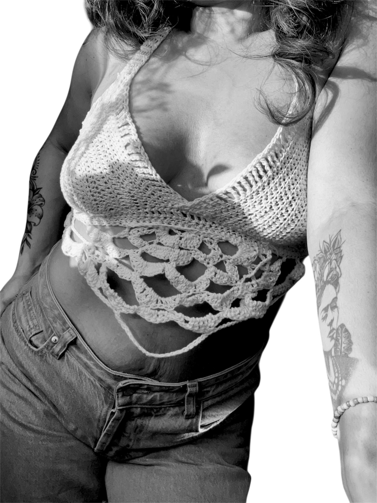
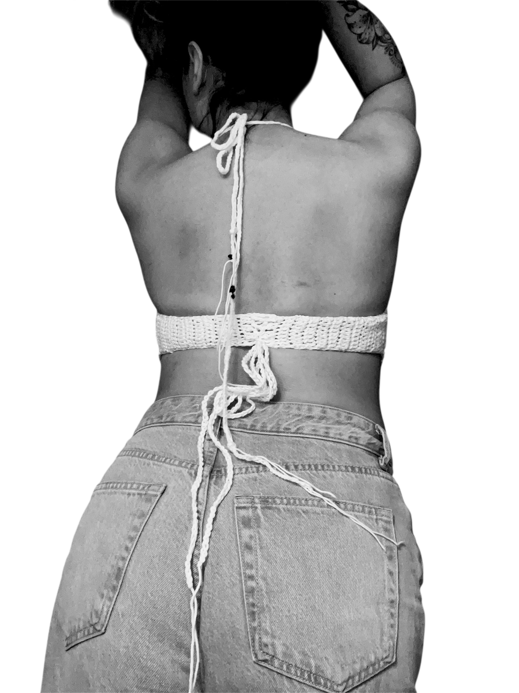
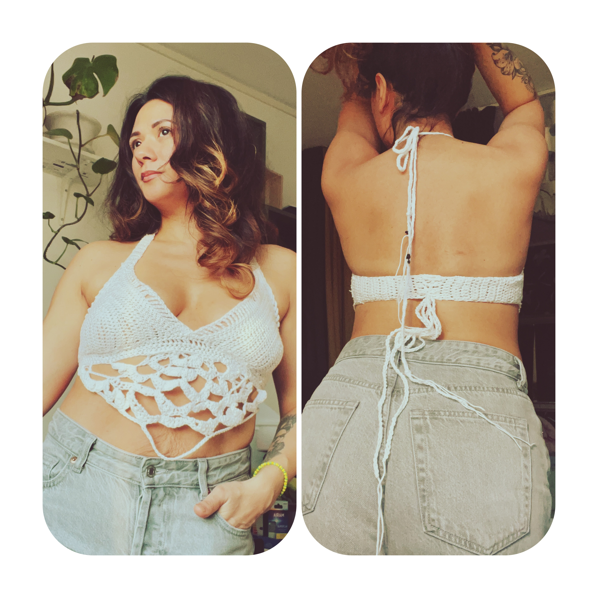

COPY PASTE.
Because the original is already a replica of nature.
Raw is the New RealWe named it Copy Paste because we refuse to do either. In a world of digital mass-production and polyester clones, we choose the "Raw."
View The Collection

No Black.
Because the soul isn't a void. We ban all black from our designs to embrace the vibrancy and energy of natural life.
No Plastic.
Because the Earth shouldn't pay for your outfit. We rely entirely on 100% Plant Fibers—Cotton and Hemp—leaving zero microplastics.
No Perfection.
Because every stitch of our plant-fiber crochet is a unique occurrence. Each "error" is transformed into one-of-a-kind art.
The Signature Crochet Top
Earth & Fiber
The Concept
Every top in this collection is a "loner artist"—vibrant, hopeful, and entirely unique. The crochet pattern is slightly different on every single garment, ensuring no two people ever own the exact same piece.
Luxury Materials
- 100% Cotton Fiber: Premium plant-based cotton, breathable and leaving zero microplastics.
- Genuine Onyx Stones: Integrated into the back for a grounded, weighted luxury feel.
- Zero Polyester: A strict vow against synthetic materials for lasting slow fashion.
The Color Palette
Available in a signature warm-toned White, or natively dyed via non-toxic coloring into soft pastel variations of Red, Blue, and Yellow.
The Raw Manifesto
A rebellion against the fast-fashion monster.In a world of mass-produced, polyester-filled fashion, this brand is the antithesis. We choose authenticity and true luxury over the cheap speed of vanity.
- The Plant-Fiber Oath: Exclusively Cotton and Hemp.
- Natural Minimalism: Found in the purity of fibers, not the dullness of aesthetics.
- Circularity in Color: Non-toxic dyes to refresh or transform your piece.
- Unprocessed & Unpolished: An aesthetic that laughs at synthetic perfection.
About the Designer
Carmen SegoviaI am a fashion designer who values authenticity more than comfort, and the raw and real more than the shiny and fake.
I believe we can thrive in style and vibrant color without creating a wasteland of polyester. I am an Antifashionista who believes in clean waters and a healthy nature.
The sustainability discussion has become a farce when corporations label synthetic plastics as "sustainable" alternatives. Copy-Paste is my "New World"—where craftsmanship, sustainability, and circularity are the priorities. Changing the industry, one drop at a time.